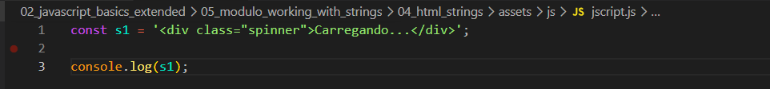
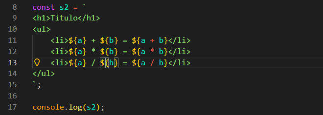

HTML Strings
Intro
Agora iremos recapitular algumas coisas vistas.
Agora iremos recapitular algumas coisas vistas.
Iremos utilizar o seguinte codigo como exemplo:

Podemos observar que fizemos uso de aspas simples e dentro dela tambem temos aspas duplas, mas podemos observar tambem que nao houve problemas em relacao ao JS, isso ocorre pois usamos aspas simples '', e geralmente no html é onde utilizas as aspas duplas "".
Agora quando precisamos criar elementos que precisam de mais de uma linha, nesse caso podemos usar a crase (template string). Com a crase ela nos permite criar uma string com varias linhas. Ficando da seguinte forma em nosso codigo:
